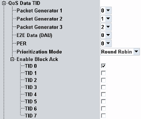

QoS Data TID Settings
This section configures TID transmission for different connection types.

TID setting
Selects the TIDs for packet generators, end-to-end data connections including DAU, and PER measurements.
Remote command:Selects the transmission sequence for packet generators:
- Round-robin schedules equal transmission time to each generator
- TID priority selection prioritizes the transmission of highest TID values.
Enables/ disables a Block Ack session for the specified TID.
Remote command: